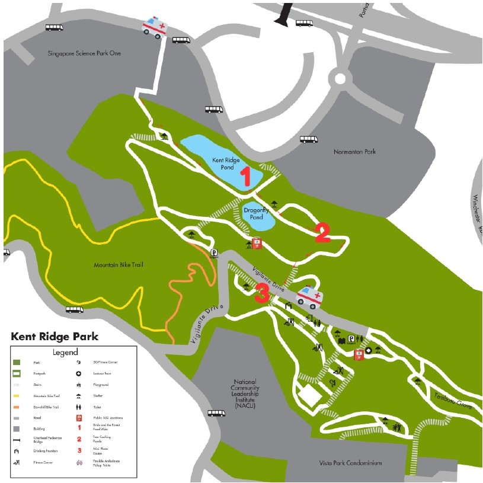
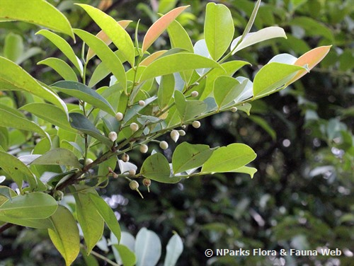

Offline reference map · select a clue from the trail list
Small clues. A bigger connection.

Observe the shape, texture and arrangement. What can you infer?
This is a proposed replacement for Activity 2: Tree Treasure Hunt in the CA3 guided walk proposal.
Switch to Wet-weather mode at an indoor venue chosen by the facilitators. Use enlarged photographs and the Street View links. Imagery coverage varies; the photo clues keep the activity playable. Return to At the park without losing progress.
The map uses a saved Kent Ridge subset of the historical public dataset used by ExploreTrees.SG. Large numbered markers are illustrative learning stops, not verified specimen locations or a walking route. Use the small tree dots to inspect the source records. Verify trees and access on a recce before field use. A tree record does not establish that an individual was planted.
Clue photos are reused from the group’s existing Tree Cipher Quiz, which attributes imagery to NParks Flora & Fauna Web. Species notes link to NParks. Tembusu’s current scientific name is Cyrtophyllum fragrans, also known as Fagraea fragrans.
Choose one tree you identified. Which feature helped you recognise it, and how might its traits help it survive?
If pioneer trees can grow on poor soil, why might people still plant other native trees? Discuss assisted succession.
What could happen to birds and seed dispersal if the green spaces around Kent Ridge became disconnected?